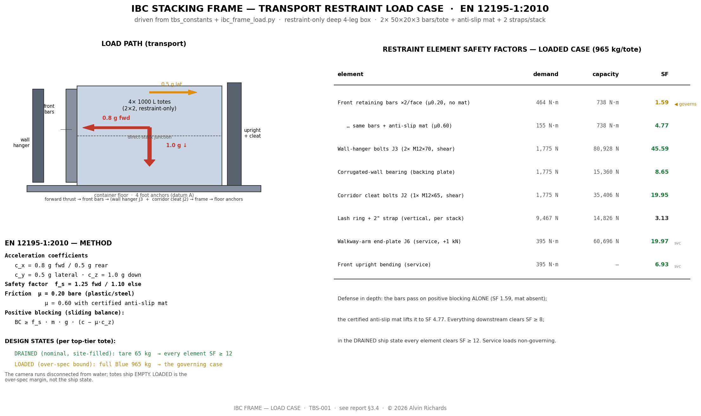
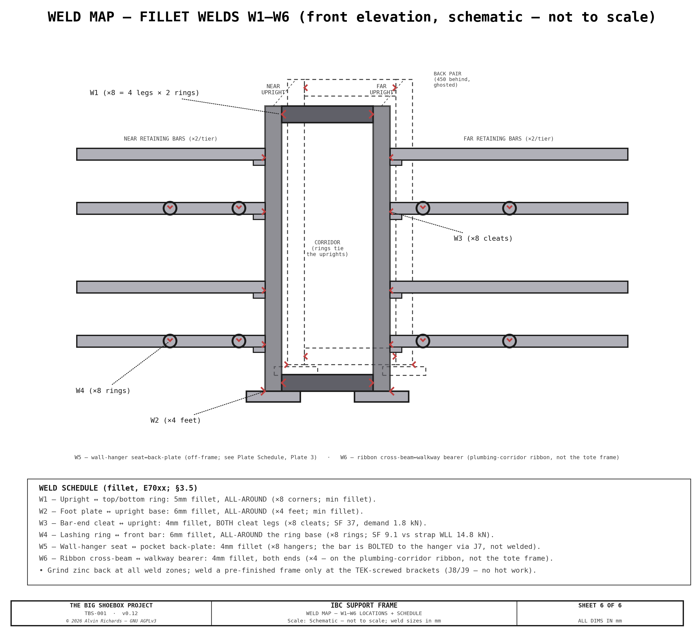
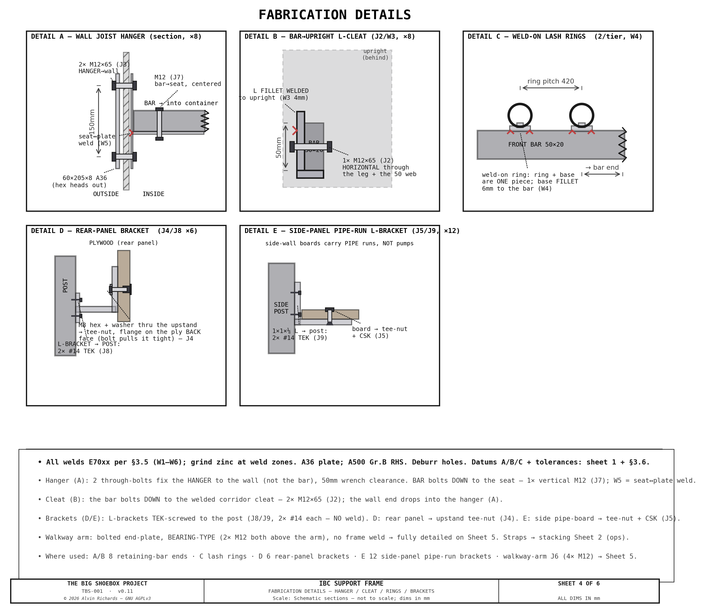
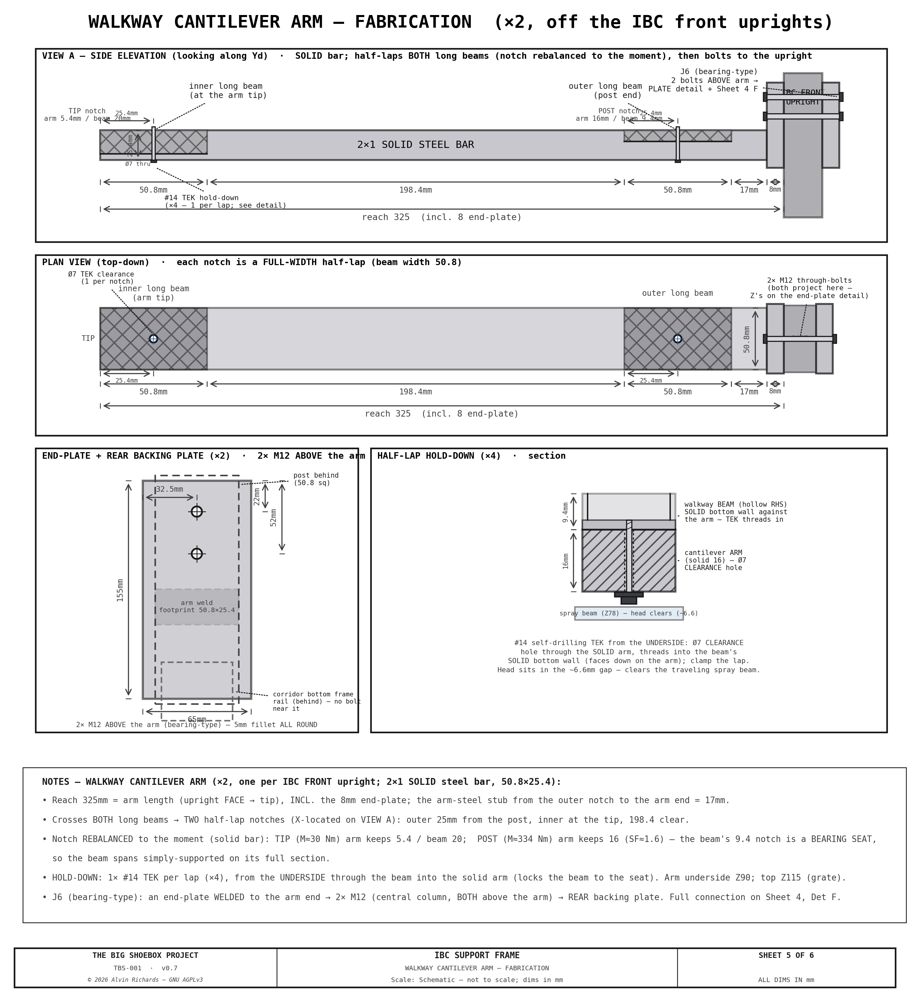
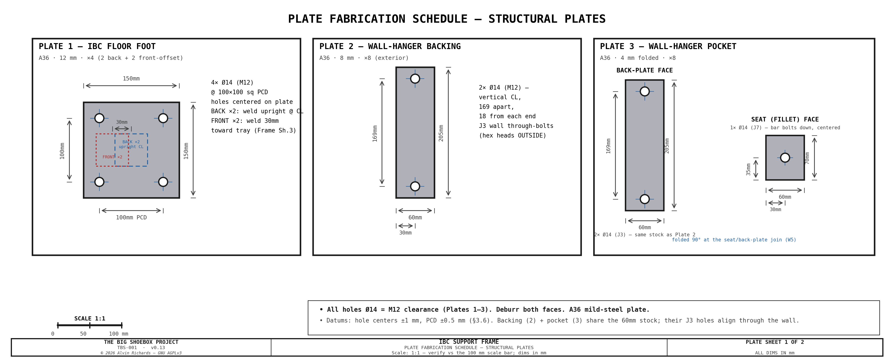
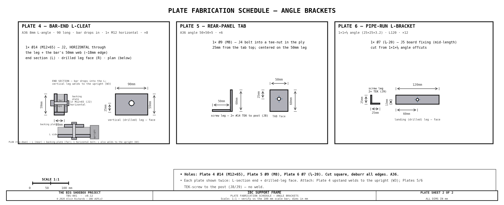

IBC Stacking System¶
1. Purpose¶
TBS-001's three-circuit water system requires four 1,000 L caged composite totes arranged in a 2×2 stack in the right end zone of the container. Two Blue supply totes (IBC-1 and IBC-2) sit on top; one Brown recycle tote (IBC-3) and one Waste tote (IBC-4) sit on the bottom. A welded mild steel restraint-only frame restrains all four direct-stacked totes for transport, and maintains a 270mm plumbing corridor between the near and far columns for internal pipe routing, valves, and the equipment panel.
Design goals:
- Restrain 4× 1,000 L caged totes in a 2×2 direct-stack (2 columns × 2 tiers)
- Restrain all totes for road transport with weld-on lashing rings
- Maintain a central plumbing corridor for pipe routing and valve access
- Enable external fill and drain without opening cargo doors
- Fit within the 2,388mm container ceiling height with adequate clearance
Interactive 3D model — the four IBC totes, the welded stacking frame, and the plumbing corridor. Drag to orbit, scroll to zoom.
2. IBC Totes¶
2.1 Specification¶
| Parameter | Value |
|---|---|
| Model | Schütz Ecobulk MX 1000L (or equivalent US 48×40 caged composite tote) |
| Capacity | 1,000 L (~264 US gal) per tote. "600 L" / "1,000 L" are fill levels, not tote sizes — all four totes are identical |
| Overall dimensions | 1,219 × 1016 × 1,168mm (W × D × H) |
| Pallet format | US 48" × 40" composite |
| Pallet base height | 168mm (includes feet/runners) |
| Cage upright tube | Ø25mm |
| Cage top rail | 25mm OD |
| Drain valve | DN50 butterfly valve, S60×6 thread |
| Fill | side entry near the top (no top-cap access — only 52mm headroom stacked) |
| Tare weight | ~65 kg per tote |
| Full weight (1,000 L) | ~1,065 kg per tote |
| Total tare (4 totes) | ~260 kg; water load see weight-distribution report |
2.2 Tote Assignments¶
| Tote | Position | Circuit | Function |
|---|---|---|---|
| IBC-1 | Top tier, near column | Blue (clean supply) | Primary clean water supply for spray bar |
| IBC-2 | Top tier, far column | Blue (clean supply) | Secondary supply, filled in parallel with IBC-1 from the X1 fill tee |
| IBC-3 | Bottom tier, near column | Brown (recycled) | Wash water buffer — filtered and recycled back to Blue |
| IBC-4 | Bottom tier, far column | Black (waste) | Contaminated water sealed for off-site disposal |
2.3 Layout¶
| Parameter | Value |
|---|---|
| Near column Yd | 30–1,046mm (pushed to near/pinhole wall, 30mm clearance) |
| Far column Yd | 1,316–2,332mm (pushed to far wall, 30mm clearance) |
| Column X range | 4,674–5,893mm (right-justified to sealed end wall) |
| Plumbing corridor | Yd=1,046–1,316mm (270mm gap between columns) |
| Single IBC height | 1,168mm |
| Stacked height (2 totes, direct-stack cage-on-cage) | 2,336mm (2 × 1,168mm — no deck/mat between tiers) |
| Ceiling clearance | 52mm (2388 − 2,336mm) — tight but transport-validated (see weight report) |
3. Stacking Frame — Restraint-Only Deep 4-Leg Box¶
3.1 General Arrangement¶
The 1,000L caged totes direct-stack cage-on-cage — the upper tote's pallet base bears directly on the lower tote's cage top, leaving only 52mm of ceiling headroom. There is no room for (and no need for) a load-bearing platform deck between tiers, so the frame is restraint-only: it carries no vertical service load, it only keeps the totes from moving during transport.
The frame is a deep 4-leg box at the IBC front, spanning the plumbing corridor: a front pair of full-height 2×2×0.120in uprights at the corridor mouth and a back pair ~450mm behind, tied by butt-jointed top and bottom rings, on four floor-flange feet (the front feet reach ~25mm under the tray edge). Transport restraint is provided by:
- front retaining bars across each column at the IBC front that stop the totes sliding out the open front, their wall ends dropped into Simpson-style joist hangers;
- Weld-on lashing rings on the front bars, with ratchet straps over each stack;
- the totes are otherwise trapped by the container side walls (30mm gap) and sealed end wall.
The box carries the Corridor Plumbing Panel (pumps) and its drain-riser backing spine on the back uprights, and gives the right-walkway cantilever arms their bolt-on point on the front uprights — so it is the shared metal structure of the IBC plumbing corridor, not just a tote-restraint frame. The panel brackets, the 12 side-panel pipe-run L-brackets, the ribbon cross-beams, and the walkway-arm connection are validated and scheduled in §3.4–3.6 alongside the tote restraint.


3.2 Frame Specification¶
| Parameter | Value |
|---|---|
| Material | 2×2×0.120in RHS mild steel (A500 Grade B) |
| Uprights | 4 full-height (deep 4-leg box: front pair at the corridor mouth + back pair ~450mm behind), tied by butt-jointed top + bottom rings |
| Floor anchorage | 4 × 150 × 150 × 12mm flange-plate feet, 4 × M12 anchors each (front feet reach ~25mm under the tray) |
| Front retaining bars | 8 × 50×20×3 RHS — two per tote face (upper + lower), both seated in the 25mm gap to the film rail, wall → upright per column. Doubled from one to carry the loaded-transport case (§3.4) |
| Anti-slip matting | 4 × certified anti-slip mat (μ ≥ 0.6) under the tote interfaces (2 on the floor + 2 on the lower-tote cage tops) — raises the sliding friction that credits against the forward thrust (§3.4) |
| Wall joist hangers | 8 × identical 2-bolt Simpson-style U-pocket — one per bar (the pair uses identical hangers for fab simplicity), each through-bolted (2 × M12×65) to an exterior backing plate (M12×65 spans the 8mm plate + corrugation + 4mm hanger grip). Wall penetrations unchanged at 16 |
| Exterior backing plates | 8 × 60 × 205 × 8mm steel (one per hanger), on the outside of the container side walls (hex heads outside) — spread the totes' transport thrust into the thin corrugated wall so the bolts can't pull through |
| Weld-on lashing rings | 8 on the front bars (4 per tier); 3,333 lb (~1,512 kg) assembly WLL (2" strap-limited), 2 straps per stack |
| Panel mount | the box carries the Corridor (pump) Plumbing Panel + drain-riser spine on the back uprights, and the right-walkway cantilever arms on the front uprights |
| Frame weight | ~123 kg (4 uprights + rings + 4 feet + 8 front bars + 8 hangers + 8 exterior plates + rear-panel brackets + 4 mats — see weight report) |
| Joints | Welded (fillet weld throughout — sizes scheduled in §3.5); the walkway-arm connection is a bolted end-plate (J6), not a frame weld |


3.3 Direct-Stack Junction¶
The upper tote bears directly on the lower tote's galvanized cage top rail (no platform, mat or lip) — the totes' normal warehouse cage-on-cage stacking interface, rated for a full upper tote.
3.4 Structural Validation (transport restraint) — EN 12195-1:2010¶
The frame carries no vertical service load (the totes stack on themselves), so there is no platform-beam bending case. The governing case is transport restraint: the totes must not shift when the container is moved by road — and, because the camera is designed to run self-contained (disconnected from mains water and power), it is transported with water aboard. The restraint is therefore designed for the loaded case, not just the drained one.
Load basis — EN 12195-1:2010 (the European cargo-securing standard for road transport). Design accelerations: 0.8 g forward (braking), 0.5 g rearward, 0.5 g lateral, with 1.0 g vertical in the friction term; safety factor f_s = 1.25 forward / 1.1 otherwise (Table 2 + §5). A blocking (positive-restraint) device must carry BC ≥ f_s · m · g · (c − μ·c_z) — the inertia demand less the friction credit. Sliding friction μ = 0.20 bare (the conservative fallback for an unlisted plastic-pallet-on-steel pairing), rising to μ = 0.60 with certified anti-slip matting (EN 12195-1 Annex B). Forward (0.8 g) governs: it is the only direction with no wall to trap the totes (the side walls trap laterally, the sealed end wall rearward). The design mass is a full top-tier Blue tote, 965 kg (65 kg tare + 900 L). Computed in ibc_frame_load.py.
The forward thrust is blocked by the front retaining bars, seated in the 25mm film-rail slot — which limits each bar to a 20mm depth in the load direction (weak-axis bending). A single bar per tote face fails this case (bending SF 0.79). The design therefore uses two bars per tote face sharing the thrust, plus certified anti-slip matting to cut the demand:
| Element | Demand (loaded) | Capacity | SF (bar-alone) | SF (+ anti-slip mat) |
|---|---|---|---|---|
| Front retaining bar — bending (2 × 50×20×3, weak-axis) | 464 N·m | 738 N·m | 1.59 | 4.77 |
| Wall-hanger bolts (2 × M12×65 Gr.8.8 per bar) | 1,775 N | 80,900 N | 46 | — |
| Wall bearing (60×205×8 plate, 1.6mm wall, 2 holes) | 1,775 N | 15,400 N | 8.7 | — |
| Bar → upright cleat (2 × M12×65 A2, shear) | 1,775 N | 70,800 N | 40 | — |
| Lashing strap — vertical tie-down (2 straps/stack) | 9,467 N | 29,650 N | 3.1 | — |
The two bars give defense in depth: as positive blocking they pass on their own (SF 1.59, mat degraded or absent); with the anti-slip mat the friction credit lifts the margin to SF 4.77. Everything downstream of the bars is comfortably strong — the wall-hanger bolts, the corrugated-wall bearing (backing-plate-spread), the cleat bolts, and the tie-down straps all clear SF ≥ 8. In the drained transport state (site-filled water, totes empty) every element clears SF ≥ 12.
- Front retaining bars (two per tote face, 50×20×3 RHS, ~1,046mm span) share each tote's forward (−X) thrust into the floor feet + wall hangers.
- Wall joist hangers — one identical 2-bolt hanger per bar (8 total; the two bars of a pair use identical hangers for fabrication simplicity), each through-bolted (2 × M12×65) to a 60×205×8mm exterior backing plate on the outside of each side wall — the plate spreads the bolt load so the thin corrugated wall cannot pull through. Total wall penetrations stay at 16 (8 hangers × 2 bolts = the old 4 × 4). M12×65 (partial thread) spans the ~42–54mm sandwich (8mm plate + corrugation + 4mm hanger). Both ends of the bar now use the SAME L-cleat — the corridor-end J2 and the wall-end J7 each drop the bar into an L-angle and run a single horizontal M12×65 through the L's vertical leg + the bar's 50mm web, with a small nut-side backing plate spreading the load into the bar's far web.
- Anti-slip matting (certified μ ≥ 0.6) under each tote interface is the primary friction lever — it triples the effective margin and directly answers the "totes must not shift" requirement.
- Weld-on lashing rings + 2 straps/stack (3,333 lb / ~1,512 kg per strap) provide vertical tie-down against the forward-tipping mode of the tall loaded stack (CG Z≈1,345mm) and supplement lateral restraint; the totes are otherwise wall-trapped.
- Floor feet (150×150×12, 4 × M12 each) anchor the uprights against uplift and transfer loads into the slab.
Service + walkway load cases (the same frame also carries the plumbing panel and the walkway — both non-governing vs the transport case):
- Plumbing panel + pumps (~20 kg on the 6 rear-panel brackets) = ~33 N/bracket, static — trivial (SF ≫ 10).
- Right-walkway cantilever — each of the 2 arms carries ~22 kg dead + a 1 kN person point load at the deck (325 mm out from the upright) = a 395 N·m moment into the front upright: the 50.8 RHS upright bends at SF 6.9, and the arm→upright connection — a bolted end-plate, bearing-type (a plate welded to the arm end, then 2× M12 both above the arm through the upright into a rear backing plate, J6): the top bolt group takes the tension while the plate bears compression at the bottom against the upright. At the ~65 mm lever the two bolts share ~3.0 kN each (SF ≈ 20 on the M12), and the backing plate spreads the reaction so the hollow RHS wall can't dish. Both bolts sit above the arm — this clears the 3-way corner congestion at the front upright: the corridor's bottom frame X-rail (Z12–63) runs behind the plate's lower edge (ghost-marked on Sheet 5) with no bolt near it, and neither bolt fouls the welded arm (Z90–115). A walkway support carries down-load only (deck + people; the grate lifts out without loading the arm up), so the asymmetric bearing-type joint is appropriate. The arm itself is a solid 2×1 flat bar (not a tube): each arm half-laps over both walkway long beams, and a notched hollow tube opens into a weak channel — a notched partial section has to be solid to keep its strength. The half-lap is rebalanced to the moment: a deep arm notch at the tip (M ≈ 30 N·m, arm keeps 5.4 mm), and at the post end (M ≈ 334 N·m) the outer beam takes the deep notch so the arm keeps 16 mm (SF ≈ 1.6 on the solid bar). The outer beam's thin 9.4 mm notch sits at an arm support, but a thin channel can't carry that support's hogging — so the half-lap is a bearing seat (the beam's upper 9.4 mm rests on the arm's lower 16 at ~0.2 MPa), i.e. a pinned support. The beam therefore spans simply-supported on its full 25.4 mm section — SF ≈ 7 and ~2 mm deflection under a person (
ibc_frame_load.outer_beam_frame_check; the light grate load and person-share are estimates to firm with the full walkway-frame model). Each half-lap is positively secured by one #14 self-drilling TEK screw (4 total) driven from the underside through a Ø7 clearance hole in the solid arm, threading into the hollow beam's solid bottom wall (which faces down onto the arm) — an anti-lift/anti-slide locator whose head clears the traveling spray beam. The arm's fabrication (including the hold-down section) is drawn on Sheet 5.
The load path, the EN 12195-1 method, and the full demand/capacity/SF matrix (driven from ibc_frame_load.py) are drawn on the load-case sheet:

3.5 Fastener + Weld Schedule (fabrication)¶
Every bolted and welded joint in the restraint frame, for the fabricator. Weld sizes are computed in
ibc_frame_load.py; torques
are the standard values for the grade.
Fastener schedule
| ID | Joint | Fastener | Grade | Qty | Torque | Washers | Locking |
|---|---|---|---|---|---|---|---|
| J1 | Floor foot-plate → floor + crossmember | #14×3¼″ winged self-driller (F14C325FDC) | 410 SS | 16 | driven to seat / flush — no torque spec (self-drilling; not a structural bolt) | — | thread-forming, self-locking |
| J2 | Front-bar corridor end → upright L-cleat — the bar drops into the L, 1 HORIZONTAL bolt through the vertical leg + the bar's tall 50 mm web (the L-corner carries the load; the bolt secures the unsupported direction) | M12×65 hex (92800A481, 18-8 SS) | A2-70 (18-8 SS) | 1 per bar × 8 = 8 | ~50 N·m with anti-seize (stainless galls → torqued lower than 8.8; no impact driver) | flat | nyloc nut |
| J3 | Wall hanger → side wall → exterior backing plate | M12×65 through-bolt (91280A728) | Gr.8.8 zinc | 16 | ~90 N·m (85–95 band) | flat (head, outside) + flat + split-lock (nut, inside) | plain nut + split-lock washer |
| J4 | Rear panel → L-bracket upstand (off the back upright) | M8 hex into captive 5/16 tee-nut set from the ply BACK face (tension pulls the flange against the wood) | zinc | 6 brackets | snug + locker (light static load) | flat washer under head | thread-locker |
| J5 | Side-panel pipe-run boards → L-brackets | ¼-20 CSK machine screw into captive pronged tee-nut (rear-panel method, #30) | zinc | 12 brackets | snug | — | pronged tee-nut (self-locking in ply) |
| J6 | Walkway cantilever arm → front upright (arm end-plate → rear backing plate, bolted through the upright; bearing-type — both bolts above the arm, clear of the corridor bottom rail + the welded arm; internal crush sleeve per bolt) | M12×100 hex through-bolt | Gr.8.8 zinc | 2 arms × 2 bolts = 4 | ~90 N·m (85–95 band) | flat both ends | nyloc nut |
| J7 | Front-bar wall end → wall-hanger L-cleat — the SAME joint as the post end: the bar drops into the L, 1 HORIZONTAL M12×65 through the vertical leg + the bar's 50mm web (nut on a far-web backing plate). The L is welded to the inside wall plate; the inside + outside plates clamp the container wall via J3 | M12×65 hex (92800A481, 18-8 SS) | A2-70 (18-8 SS) | 1 per bar × 8 = 8 | ~50 N·m with anti-seize | flat | nyloc nut |
| J8 | Rear-panel L-bracket → back upright (post leg) | #14 self-drilling TEK screw, #4/5 point, HWH | 410 SS | 2 per bracket × 6 = 12 | driven to seat — no torque spec (self-drilling; light static panel load) | bonded washer | thread-forming, self-locking |
| J9 | Side-panel pipe-run L-bracket → side post (weld leg) | #14 self-drilling TEK screw, #4/5 point, HWH | 410 SS | 2 per bracket × 12 = 24 | driven to seat — no torque spec (self-drilling; light pipe load) | bonded washer | thread-forming, self-locking |
Straps: 2 × 2″ ratchet strap per stack, ratcheted to the 3,333 lb (~1,512 kg) assembly WLL — no torque.
Torque sources: M12 8.8 zinc/dry ≈ 88 N·m (Fastenal torque-tension, K = 0.20) to 93 N·m (Bossard preload/torque, µ = 0.14); M12 A2-70 ≈ 51 N·m (µ = 0.10, Bossard austenitic-stainless table); #14 self-drillers are driven to seat, not torqued (ITW Buildex TEKS technical guide).
Weld schedule (fillet, E70xx electrode; frame welds carry small restraint loads → set by the AWS D1.1 minimum practical fillet for ≤6 mm plate, except the load-checked W3/W4)
| ID | Joint | Fillet leg | Extent | SF |
|---|---|---|---|---|
| W1 | Upright ↔ top/bottom ring | 5 mm | all-around | min fillet |
| W2 | Floor foot-plate ↔ upright base | 6 mm | all-around | min fillet |
| W3 | Bar-end cleat ↔ upright | 4 mm | both cleat legs | 37 (demand 1.8 kN) |
| W4 | Weld-on lashing ring ↔ front bar | 6 mm | all-around the ring base | 9.1 (demand = strap WLL 14.8 kN) |
| W5 | Wall-hanger seat ↔ pocket back-plate (the hanger PLATE weldment — the bar is bolted to it via J7, not welded) | 4 mm | — | min fillet |
| W6 | Ribbon cross-beam ↔ walkway bearer (×4 ends) | 4 mm | both ends | min fillet |
The rear-panel bracket (J8) and the side-panel pipe-run L-bracket (J9) are no longer welded — they attach to the post with #14 self-drilling TEK screws (2 per bracket) so they can be added to a pre-finished, painted frame with no hot work and stay adjustable; both carry only light static loads (panel ~33 N/bracket; pipe runs lighter).
Sheet 6 maps where each weld lands on the frame (a schematic front elevation with W1–W6 ticked) alongside the schedule:

The wall joist hangers are folded 4 mm plate (bent, not welded); the exterior backing plates are loose (bolted, not welded). The corridor-panel + side-panel pipe-run brackets and the ribbon cross-beams are the plumbing-corridor metal that shares this frame; the walkway cantilever arms bolt to the front uprights (J6, an end-plate welded to the arm + a rear backing plate, 4× M12 through-bolts — not a frame weld) and are fabricated per Sheet 5.
These joints are drawn on Sheet 4 (each with its weld + fastener callout):

The walkway cantilever arms — how each arm is cut (the two half-laps where it crosses the walkway's inner + outer long beams, dimensioned on the side elevation) and the end-plate bolt-hole pattern — are drawn on Sheet 5 (VIEW A side elevation of the J6 joint, the END-PLATE detail, and the PLAN VIEW showing the plate→post through-bolts):

3.6 Datum + Tolerance Scheme¶
The frame is a welded structure, so tolerances follow ISO 13920 Class B (general tolerances for welded constructions) for linear/angular, and AWS D1.1 for the welds; the values below are the functional tolerances that actually matter for fit-up.
Datums:
- A (primary) — the common plane of the four floor-foot undersides. The frame is set and shimmed to A; everything references off it (it sits on the container floor).
- B (secondary) — the front-upright front faces (X = 4,654 mm, the corridor mouth). References the retaining-bar / hanger X positions and the walkway-arm end-plate point.
- C (tertiary) — the corridor centerline (Yd = 1,181 mm, midway between the two tote columns). Symmetry reference for the columns and the 270 mm plumbing corridor.
Functional tolerances:
| Feature | Tolerance | Why |
|---|---|---|
| Foot-underside coplanarity (flatness ⟂ A) | ±1.5 mm | frame sits flat on the floor, minimal shim |
| Upright plumb (perpendicularity to A) | ±2 mm over 2,296 mm (≈0.05°) | totes + corridor stay square |
| Frame diagonal square (Δ of the two diagonals) | ±3 mm | a true rectangular box |
| Foot-plate M12 hole pattern (100 mm PCD) | ±0.5 mm | floor-anchor clearance |
| Front-bar seat / hanger-pocket Z position | ±2 mm | bars seat cleanly + the wall holes align |
| Exterior backing-plate M12 holes (to its hanger) | ±1 mm | M12×65 through-bolt clearance |
| Corridor clear width (between the inner uprights) | +2 / −0 mm | the 270 mm plumbing corridor must not pinch |
| Rear-panel bracket Z position (on the back uprights) | ±2 mm | plumbing-panel mount aligns |
| Side-panel pipe-run L-bracket landing (post inner face) | ±2 mm | the support boards seat flush |
General (unspecified) dimensions: ISO 13920 Class B. Break sharp edges; deburr all drilled holes.
3.7 Assembly + Weld Sequence¶
The frame is a shop-welded box that bolts out in the field — deliberately, so the only hot work is the deep 4-leg weldment (§3.5, W1–W6). Everything hung on it afterward — the wall hangers, the retaining bars, the corridor-panel and pipe-run brackets — attaches with fasteners (J1–J9), so the fit-out and the tote loading happen on a finished, painted frame with no welding on-site. Build in four phases:
Phase 1 — Shop-weld the deep 4-leg box (the only weldment).
- Fit-up in a jig referencing the datums (§3.6): the four foot undersides on the flat table = datum A, the front-upright faces = B, the corridor centerline = C. Clamp the four uprights + the top/bottom rings; set the box square.
- Tack, then check square before finish-welding — verify the diagonals and upright plumb are inside the §3.6 tolerances while the joints are still only tacked and correctable. A weldment pulls toward each bead, so distortion is controlled by balanced, symmetric welding, not by fixing it afterward (TWI — distortion control).
- Finish-weld in a balanced order: ring-to-upright joints in a back-step / alternate-corner pattern so heat input stays symmetric about datum C; weld the four feet with the frame held down on the flat table so the undersides stay coplanar to A (the frame's seat). Then add the smaller weldments — the bar-end cleats (W3), the weld-on lash-ring bases (W4), and the ribbon cross-beams (W6).
- Grind the zinc back at every weld zone (galvanized/primed stock burns dirty), welds per §3.5 (E70xx).
- Post-weld: re-check the §3.6 tolerances, then coat (surface-finish spec is set at the fab/quoting stage).
Phase 2 — Bolt-on fit-out (no hot work, on the finished frame). TEK-screw the corridor-panel and pipe-run L-brackets to the posts (J8/J9), then hang their ply boards (J4/J5). Because these are self-drillers into the post wall, the brackets can be located, adjusted, or replaced on the painted frame without touching a welder.
Phase 3 — Install + anchor in the container. Set the box on the floor, shim to datum A, and anchor the four feet (J1). Through-bolt each wall hanger to the side wall via its exterior backing plate (J3) — the backing plate spreads the load into the thin corrugated wall.
Phase 4 — Load the totes + secure. Direct-stack the four totes, drop the front retaining bars into the wall hangers, and bolt each bar down — the corridor end to its cleat (J2) and the wall end with its centered retention bolt (J7). Fit the anti-slip mats under the tote interfaces, then lash down per §4. Transport removes nothing from the frame; only the tote straps are released at the destination.
3.7 Member Cut List¶
Every cut member of the restraint frame, with its fabrication cut size and quantity. Computed from the
geometry constants by src/generators/ibc_frame_cutlist.py (the same math the 3D model builds from, so
the list can't drift from the model); regenerate with python3 src/generators/ibc_frame_cutlist.py --inject.
Cut sizes are member-to-member butt lengths — add saw kerf per shop practice.
| Member | Section / plate | Material | Cut size | Qty | Note |
|---|---|---|---|---|---|
| Corner upright | 50.8×50.8×3 SHS (2×2×0.120in) | A500 Gr.B | 2284 mm | 4 | full height; sits on the foot plate (Z12→TOP_Z) |
| Ring rail — Yd (cross) | 50.8×50.8×3 SHS (2×2×0.120in) | A500 Gr.B | 168.4 mm | 4 | 2 rings (top+bottom) × 2 X-faces; butts between uprights |
| Ring rail — X (deep) | 50.8×50.8×3 SHS (2×2×0.120in) | A500 Gr.B | 399.2 mm | 4 | 2 rings × 2 Yd-faces; ties front↔back uprights |
| Front retaining bar | 50×20×3 RHS | A500 Gr.B | 1042 mm | 8 | 2 per tote face (near+far columns identical length) |
| Foot plate | 150×150×12 plate | A36 plate | 150×150×12 mm | 4 | 4× Ø12mm anchor holes on Ø100 PCD |
| Exterior wall backing plate | 8 mm plate | A36 plate | 60×204.8×8 mm | 8 | one per wall hanger; spreads the M12×65 load into the corrugated wall |
| Wall joist hanger | 4 mm folded plate | A36 plate | back 205 + seat 70, ×60 wide | 8 | Simpson-style U-pocket; folded, not welded |
| Front-bar L-cleat (J2/W3) | 8 mm angle | A36 plate | 90 long · vertical leg 59 + horizontal leg 28 | 8 | L-angle: the bar drops into the corner (horizontal leg under it, vertical leg fillet-welded to the upright); 1 horizontal M12 through the vertical leg + the bar web |
| Rear-panel bracket (D) | 5 mm angle | A36 plate | base 40 + upstand, ×60 tall × 30 wide | 6 | L-bracket TEK-screwed to the back uprights (J8) + panel bolts (J4) |
| Weld-on lashing ring | forged ring + base | — | purchased | 8 | not a cut member — 2 per tier on the lower front bars (W4) |
Stock (buy sticks; add saw kerf + ~10% drop):
| Section | Total cut length | ≈ sticks (24 ft) |
|---|---|---|
| 50.8×50.8×3 SHS (uprights + rings) | 11.41 m (37.4 ft) | 2 |
| 50×20×3 RHS (front bars) | 8.34 m (27.3 ft) | 2 |
The fabricated (non-stick) parts — the foot plate, the exterior wall backing plate, the folded wall joist hanger, and the front-bar cleat — are dimensioned 1:1 with their hole patterns and J/W callouts on the Plate Fabrication Schedule (Plates 1–4).
4. Securing for Transport¶
4.1 Weld-On Lashing Rings¶
| Parameter | Value |
|---|---|
| Quantity | 8 total (4 per tier) |
| Type | 1½" (38mm) ID weld-on tie-down ring, ½" thick, zinc-plated steel |
| Working load limit | 6,600 lb (2,994 kg) ring — assembly strap-limited to 3,333 lb (~1,512 kg) |
| Mounting | Fillet-welded directly to the front retaining bars (integrated weld base — no separate plate) |
| Supplier | McMaster-Carr #3028T31 |
4.2 Ratchet Straps¶
| Parameter | Value |
|---|---|
| Type | 2" (50mm) ratchet strap (Keeper 82827) |
| Working load limit | 3,333 lb (~1,512 kg) |
| Routing | ring to ring, over IBC top, 1 strap per tier per side |
| Total straps | 4 (2 per tier) |
| Pre-transport | Tighten all straps; re-check tension after 50 km |
4.3 Wall Trapping¶
There is no anti-rotation lip. The direct-stacked totes are trapped laterally by the container side walls (30mm gap each side) and the sealed end wall; the front retaining bars + lashing-ring ratchet straps restrain the open front and provide vertical tie-down. Together these restrain both tiers in all six DOF.
4.4 Anti-Slip Matting¶
| Parameter | Value |
|---|---|
| Quantity | 4 (one under each tote: 2 on the container floor, 2 on the lower-tote cage tops) |
| Type | Certified anti-slip cargo matting, μ ≥ 0.6 (EN 12195-1 Annex B) — cut to the tote pallet footprint |
| Purpose | Raises the sliding friction that credits against the forward thrust (μ 0.2→0.6), tripling the front-bar margin (SF 1.59→4.77, §3.4) — the primary "totes don't shift" lever |
| Note | Must be a tested/certified μ ≥ 0.6 product; untested rubber caps at μ 0.2 |

5. Drain Valve Access¶
The bottom-tier drain valves (DN50 butterfly, corridor-facing) are reached directly from the open corridor front — with the Corridor Plumbing Panel moved forward and no load-bearing base frame, there are no removable access gates. The operator reaches in from the right walkway.
6. External Bulkhead Ports¶
Three 2" NPT bulkhead ports penetrate the sealed end wall on the container centerline — X1 (Blue fill), X3 (Brown drain), and X4 (Waste drain) — so all four totes fill and drain without opening the cargo doors. X1 gravity-feeds an internal tee that side-enters both Blue totes near the top, so one external hose fills both. Each penetration is backed by a welded wall reinforcing plate that spreads its load into the corrugated wall (the same approach as the frame's exterior backing plates, §3.2).
The port elevations are the diagram-of-record (see §8 Sheet 3). The bulkhead fittings, camlock, and seals are specified in the Water System Report §5 and §7; the bulkhead BOM, including the reinforcing plates, is in the master shopping list. (These end-wall ports are distinct from the two equipment Plumbing Panels — Corridor and Pinhole Wall — in §7.)

7. Internal Plumbing¶
All internal supply and return lines route through the 270mm plumbing corridor between the near and far IBC columns, reaching each tote's corridor-facing DN50 butterfly valve (S60×6 thread). The pipe specification, the per-circuit routing (X1 Blue gravity-fill teed to both top totes, X3 Brown and X4 Waste pumped drains, and the recycle returns), and the valve schedule are specified in the Water System Report §4–§5 and §7. The pumps and diverter valves that drive those circuits — on the Corridor Plumbing Panel (plywood, at the front (cargo-door) mouth of the corridor, bolted to the deep-box frame, see §3.2) — together with the 3-stage filter bank on the Pinhole Wall Plumbing Panel are specified in the Plumbing Report. This report treats the corridor plumbing and both panels only as loads the stacking frame carries.


8. Engineering Drawings¶
The construction drawings cover the IBC system across two drawing sets. They are shown inline in the relevant sections above; the full set is collected here and in Engineering Diagrams.
IBC Stacking & Securing (5 sheets)¶
Sheet 1 — Cross-section elevation: 2-tier direct-stack, restraint deep 4-leg box, front retaining bars + wall hangers, direct-stack junction, 52mm clearance
Sheet 2 — Securing arrangement: the 8 lash-point locations + strap routing over each stack (rigger's plan; fastening + weld construction details → IBC Support Frame Sheet 4)
Sheet 3 — External bulkhead ports: Sealed end wall elevation with 3× ports
Sheet 4 — Internal plumbing plan view: IBC layout, pipe routing, valves, Corridor Plumbing Panel
Sheet 5 — Internal plumbing elevation: Pipe routing from IBCs to bulkhead unions
IBC Support Frame Fabrication (6 sheets + 2 plate-schedule sheets)¶
Sheet 1 — Front elevation: deep-box uprights (front pair, back pair 450mm behind), floor feet, front retaining bars with their J2 corridor-end L-cleats (1 horizontal bolt) and J3/J7 wall-hanger bolts, weld-on lashing rings, direct-stack junction
Sheet 2 — Side elevation: deep 4-leg box (front + back uprights + top/bottom rings) + front bars (end-on) + the walkway cantilever arm with its J6 bearing-type connection (2× M12 run through the post ABOVE the arm — end-plate + rear backing plate) + the plywood mounting tabs on the back upright
Sheet 3 — Plan view: deep 4-leg box (4 legs + ring perimeter) + retaining bars + 4 floor feet + IBC footprints + corridor + walkway arms
Sheet 4 — Fabrication details: DETAIL A wall joist hanger (per-bar, 2-bolt, 50mm clearance), B bar→upright cleat, C weld-on lashing ring, D rear-panel bracket, E side-panel pipe-run L-bracket — each with weld (W) + fastener (J) callouts. (The walkway arm→upright J6 connection is drawn in full on Sheet 5, so its former Detail F here was dropped as a duplicate.)
Sheet 5 — Walkway cantilever arm fabrication (×2, off the IBC front uprights): VIEW A dimensioned side elevation (arm reaching 325 mm from the upright to the tip, half-lapping over both long beams — notch widths + gaps 50.8 / 198.4 / 50.8 / 17 arm-steel + 8 end-plate = 325 reach, half-lap depth 20 of the 25.4; J6 bolted end-plate), PLAN VIEW (each notch a full-width half-lap, beam width 50.8; the plate→post through-bolts shown at the upright end), and the END-PLATE / rear-backing-plate detail (65 × 155, 2× Ø13 for M12 both above the arm at 30 spacing — bearing-type; the corridor bottom frame rail is ghost-marked behind the plate's lower edge with no bolt near it — 5 mm fillet all round, arm weld footprint shadow-marked)
Sheet 6 — Weld map: a schematic front elevation with every fillet weld W1–W6 ticked to where it lands on the frame (W1 upright↔ring, W2 foot↔upright, W3 bar-end cleat↔upright, W4 lashing ring↔bar, W5 wall-hanger seat↔back-plate, W6 ribbon cross-beam↔walkway bearer), alongside the full weld schedule (size, all-around vs both-legs, qty, and the governing SF)
Plate Schedule Sheet 1 — Structural plates drawn 1:1 for the shop: PLATE 1 IBC floor foot (150×150×12, 4× Ø14 @ 100 sq PCD), PLATE 2 wall-hanger exterior backing (60×205×8, 2× Ø14 @ 169), PLATE 3 wall-hanger pocket (folded 4 mm back-plate + 70 seat, J3 + J7 holes) — each with outline dims, hole Ø + center positions, thickness, material, and qty

Plate Schedule Sheet 2 — Bar-end L-cleat + welded angle brackets drawn 1:1: PLATE 4 bar-end L-cleat (8 mm L-angle, 90 long; the bar drops into the corner, 1 horizontal Ø14 for M12×65 through the vertical leg + the bar's 50 mm web, J2/W3), PLATE 5 rear-panel tab (50×50×5, Ø9/M8, J4), PLATE 6 side-panel pipe-run L-bracket (1×1×⅛, Ø7/¼-20, J5) — L-section end + drilled-leg face for each

Full drawings also appear in Engineering Diagrams §15 (stacking) and §17 (frame fabrication).
9. Parts List¶
9.1 Stacking Frame¶
| Item | Spec | Qty | Supplier | Est. cost |
|---|---|---|---|---|
| 2×2×0.120in steel SHS (6 m bulk lengths) | Deep 4-leg box uprights (front + back pair) + top/bottom rings + front retaining bars + panel-mount rail (~24 m; front retaining bars DOUBLED to 8 (2/tote face, 50×20×3, ~8.8 m) after the EN 12195-1 loaded-transport case — ibc_frame_load.py; the 50×20×3 bars are a separate section from the 2×2 uprights, lumped here as bulk steel pending the Phase-D split). MATERIAL = 2×2×⅛in A500 square tube (US equiv, confirmed 2026-08-01). SOURCING: full 6m/20-24ft sticks minimize splices but ship only by freight — online cut-to-size shops cap at 96in (UPS max: AllMetals/InchOfMetal 96in, Speedy $7.27/ft cut-retail ≤90in). So the ~$120-180 (4×$30-45) est is realistic BULK full-length pricing (~$1.50-2.50/ft); firm it from a local steel-yard / MetalsDepot 24ft freight quote — NOT an online cut-to-size lookup (which overprices bulk ~3×). | 4 ea | Metal Supermarkets | $120–$180 |
| 12mm steel plate, 150 × 150 cut | Deep-box upright floor flange feet (one per leg; front feet reach under the tray) | 4 ea | Metal Supermarkets | $20–$40 |
| 4mm folded plate | Simpson-style U-pocket wall joist hangers — 8 IDENTICAL 2-bolt hangers, one per front retaining bar (the pair uses identical hangers for fab simplicity — Alvin 2026-08-14). Each through-bolted (2× M12×65) to its own exterior 60×205×8 backing plate on the outside of the container side wall. Wall penetrations unchanged at 16 (8 hangers × 2 = old 4 × 4). | 8 ea | Local fab | $60–$100 |
| Weld-on lashing ring, 1½" ID (3028T31) | Zinc-plated steel weld-on tie-down rings — 1½" (38mm) inside × ½" thick, 6,600 lb WLL; fillet-welded to the front retaining bars (4 per tier × 2 tiers). Integrated weld base — no separate mount plate. Ring (6,600 lb) exceeds the 2"-strap-limited 3,333 lb (~1,512 kg) assembly WLL. | 8 ea | McMaster-Carr | $40 |
| 2" (50mm) ratchet strap, 3,333 lb WLL (82827) | Transport securing, over each stack (2 per stack × 2 stacks). Keeper 82827 heavy-duty 2"×27ft, 3,333 lb (~1,512 kg) WLL / 10,000 lb break — width corrected 25mm→50mm (a 1" strap can't hold the 1,100 kg the restraint needs). EN 12195-1 vert tie-down SF 3.1 loaded (ibc_frame_load.py). | 4 ea | Home Depot | $68 |
| Certified anti-slip cargo matting (μ≥0.6) | Certified anti-slip rubber matting under each tote interface (4: 2 on the container floor + 2 on the lower-tote cage tops). Raises the sliding friction μ 0.2→0.6 per EN 12195-1 Annex B, cutting the front-bar forward-blocking demand ~3× (bar SF 1.59 bar-alone → 4.77 with mat; ibc_frame_load.py). Cut to the tote pallet footprint (~1.0×1.2 m). REQUIRES a certified/tested μ≥0.6 product (untested rubber caps at μ 0.2). | 4 ea | Uline / cargo-securing supplier | $40–$80 |
| Self-drilling structural screw, #14×3¼″ winged, 410 SS (F14C325FDC) | 4 deep-box flange feet × 4 each. Self-drills the 6mm foot plate + 28mm plywood and taps the ~4mm steel crossmember — LAND EACH FOOT OVER A CROSSMEMBER (~450mm centers). Wings ream the plate/ply clearance then snap off at the steel. 410 SS (martensitic — self-drills steel; 316 can't). The IBC dead load bears in compression on the floor; the screws resist sliding/uplift only. Through-bolt 316 + backing nut instead where a crossmember underside is reachable. $1.02/ea (100-pk). | 16 ea | Fasteners Plus / ASMC | $16 |
| M12×65 hex bolt, 18-8 SS (partial thread) (92800A481) | Front-bar fasteners: 8 = corridor-end L-cleats (J2, 1 HORIZONTAL bolt per cleat × 8 bars — through the L's vertical leg + the bar's TALL 50mm web, so the Ø14 hole gets ~18mm edge; the L-corner carries the load, the bolt secures the unsupported direction — redesigned from 2 vertical bolts, Alvin 2026-08-18) + 8 = wall-end vertical retention bolts (J7, 1 CENTERED per bar, down through the bar into the pocket seat, ~58mm stack). M12×65 reused for BOTH (>40mm needed; partial-thread smooth shank spans the grip; the 65 length is long for J2's ~36mm grip but avoids a second SKU — pad/trim at fab). McMaster 92800A481: M12×1.75 × 65mm 18-8 SS partial-thread hex — firm $9.95/pack of 5 (2026-08-17, Alvin; 16 used → 4 packs). Full-thread alternative: 92314A595 $11.92/5. | 16 ea | McMaster-Carr | $32 |
| M12×65 hex through-bolt, Grade 8.8 zinc, partial-thread (91280A728) | IBC wall-hanger through-bolts (2 each × 8 hangers = 16) — through the corrugated side wall to the exterior 60×205×8 backing plate (hex heads outside). Grip = 8mm plate + ~30mm corrugation + 4mm hanger flange ≈ 42–54mm → M12×65 partial-thread (the fully-threaded M12×40 could not span it). $15.95/pack of 10 → 2 packs for 16. Pad with 1–2 M12 flat washers if the actual corrugation is <30mm. | 16 ea | McMaster-Carr | $26 |
| M12 hex nut, plain (90591A181) | Plain hex nut (inside the container) — M12×65 wall-hanger through-bolts (+ split lock washer). $12.78/pack of 50. Pitch M12×1.75 coarse — confirmed vs 90591A181 PDF 2026-07-29. | 16 ea | McMaster-Carr | $4 |
| M12 flat washer, zinc (91166A290) | Flat washers, M12×65 wall-hanger bolts — 2 functional + 2 shim/bolt (shims pad the grip if corrugation <30mm). $9.71/pack of 100. | 64 ea | McMaster-Carr | $6 |
| M12 split lock washer, zinc (91202A246) | Split lock washer under each nut — M12×65 wall-hanger bolts (plain nut + split = locked). $11.97/pack of 100. | 16 ea | McMaster-Carr | $2 |
| Steel backing plate 60×205×8mm | Exterior wall backing plates — 8 identical, one per 2-bolt hanger — flat 60×205×8mm steel on the OUTSIDE of the container side wall (hex heads outside), 2× M12 holes; spreads the totes' transport thrust into the thin corrugated wall so the through-bolts can't pull through. | 8 ea | Metal Supermarkets | $32–$56 |
| L-cleat nut backing plate 40×50×8mm | Small nut-side spreader plate (~40×50×8mm A36) on the bar's FAR web at each L-cleat through-bolt — 8 corridor-end (J2) + 8 wall-end (J7). The single horizontal M12 nut bears on this plate instead of the thin (3mm) RHS bar wall, so the wall can't dish (Alvin 2026-08-18). Cut from A36 plate offcuts. | 16 ea | Metal Supermarkets | $10–$19 |
| Welding / fabrication (frame assembly) | ~14–20 hrs labor (deep 4-leg box — the ring/back-upright welds sit at the upper end of the range) | 1 lot | Local fab | $688–$1,018 |
| Primer + paint | Anti-corrosion coating | 1 lot | Hardware store | $30–$50 |
| Ibc-Frame total | $1,193–$1,737 |
9.2 IBC Totes¶
| Item | Specification | Qty | Est. cost (USD) |
|---|---|---|---|
| 1,000 L caged composite IBC tote (Schütz Ecobulk MX 1000 or equiv.) | New or reconditioned US 48×40 caged composite (~65 kg) | 4 | $300–$900 |
| IBC subtotal | $300–$900 |
The corridor and bulkhead plumbing parts (pipe, valves, fittings, camlock, bulkhead unions, reinforcing plates) are budgeted in the Water System Report §8 and the master shopping list, not here — this BOM covers only the stacking structure and the totes it restrains.
9.3 Cost Summary¶
| Assembly | Low estimate | High estimate |
|---|---|---|
| Stacking frame (restraint deep 4-leg box) | $1,193 | $1,737 |
| IBC totes (4×) | $300 | $900 |
| Total | $1,280 | $2,405 |
10. Maintenance Schedule¶
| Interval | Task |
|---|---|
| Every use | Visually inspect ratchet strap tension before transport |
| Every 10 prints | Inspect IBC valve seals (DN50 butterfly) for drips; tighten or replace O-ring |
| Every 10 prints | Check external camlock fittings for cross-threading; clean dust caps |
| Every 6 months | Inspect lashing-ring welds for cracking; load-test straps |
| Every 6 months | Inspect lashing rings + ratchet straps for wear; re-tension straps |
| Annually | Inspect frame welds (all joints) for fatigue cracking |
| Annually | Touch up paint on frame where chipped or rusted |
| Annually | Inspect front-bar/wall-hanger bolts and upright floor-anchor bolts for loosening; re-torque to spec |
| Annually | Flush all internal pipes with clean water; inspect for biofilm |
| As needed | Replace camlock gaskets if leaking |
| As needed | Clean IBC interiors between circuit changes (bleach rinse + water flush) |
11. Sources¶
| Item | Source |
|---|---|
| Schütz Ecobulk MX 1000 L IBC | Schütz product catalog — US 48×40 composite tote, DN50 valve, UN31HA1/Y (all four totes are this size; "600 L"/"640 L" are fill levels, not tote sizes) |
| Weld-on lashing ring | McMaster-Carr #3028T31 — 1½" ID, ½" thick, 6,600 lb WLL |
| Plumbing fittings, pipe, valves, camlock, pumps | Specified and sourced in the Water System Report §11 and Plumbing Report §11 |
| Water system architecture | Water System Report §3 |
| IBC layout and stacking | Equipment Layout Report §5 |
| Frame fabrication drawings | §8 — Engineering Drawings (this report) · All Diagrams |
| Plumbing panel specification | Plumbing Report |